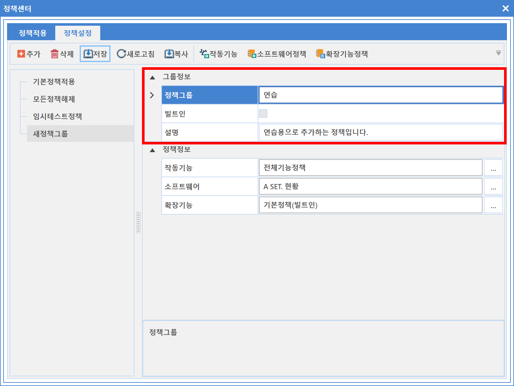
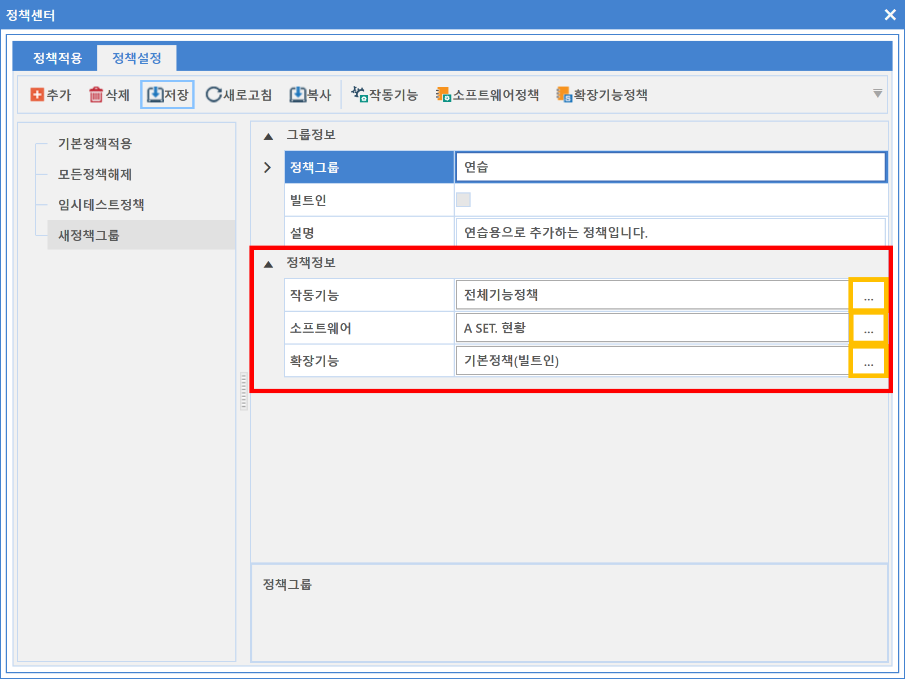
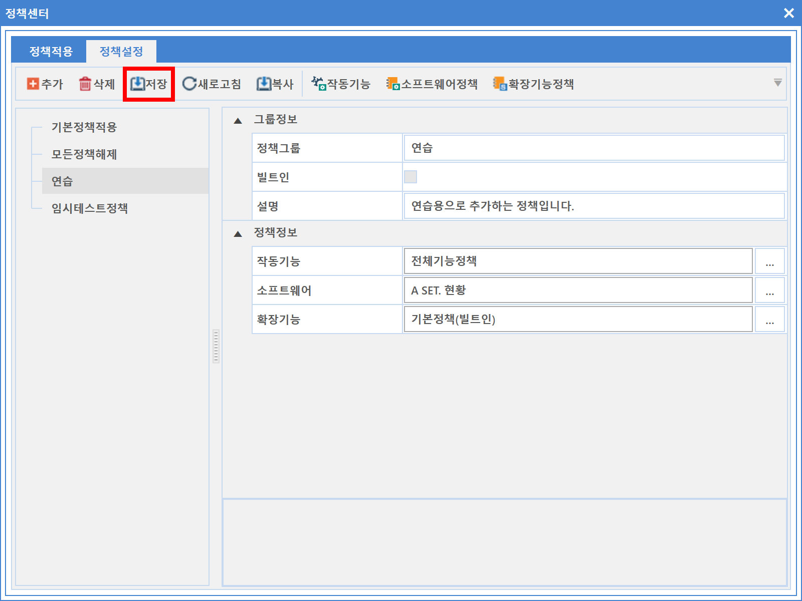

3-1-4-2. 정책설정
3-1-4-2. 정책설정
Source: https://www.sweeper.or.kr/etc/manual/3142.html
3-1-4-2. 정책설정
3. 공통 ›› 3-1. 도구 ›› 3-1-4. 정책센터 ››


단위 정책(작동기능, 소프트웨어 정책, 사용자인증 정책, 정책IP대역 관리)들을 조합하여, 마스터 정책들을 만들기 위한 화면입니다.
정책을 만든 이후에는 이 정책을 수행할 장비나 부서같은 그룹을 할당(3-1-4-1. 정책적용)하면 해당 장비나 부서는 마스터 정책의 설정대로 동작합니다.
설정 방법
- 정책설정 Tab을 선택한 뒤 추가 버튼을 클릭합니다.

-
신규 추가된 그룹의 이름과 설명을 입력합니다.
-
그룹정보
-
정책그룹 : 정책그룹 명을 입력합니다.
-
빌트인 여부 : 빌트인 정책 여부를 확인합니다.
-
빌트인 설정이 되었을 경우 정보를 변경할 수 없습니다.
-
설명 : 간단한 정책 설명을 입력합니다.
-

-
정책정보에서 각 단위기능을 선택합니다.
-
정책정보
-
작동기능 : 생성한 [작동기능 그룹]을 선택합니다.
- 소프트웨어 : 생성한 [소프트웨어 정책]을 선택합니다.
-
확장기능 : 생성한 [확장기능 정책]을 선택합니다.
-

-
위 이미지에서 노란색 네모를 누르면, 앞서 생성한 단위 정책을 선택할 수 있습니다.
-
저장합니다.
 -
정책 적용 대상을 추가합니다.

참고사항
- 기존의 정책을 복사하는 기능을 통해, 정책생성 시간을 단축할 수 있습니다.

© Copyright SWeeper Inc.. All Rights Reserved